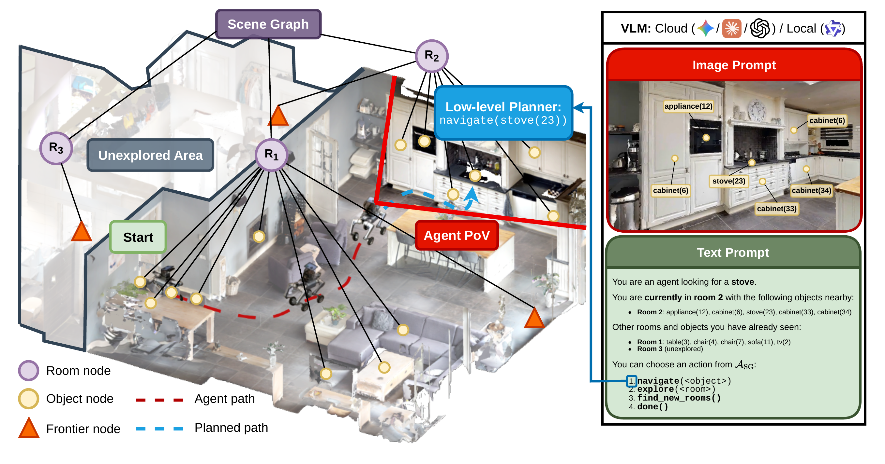
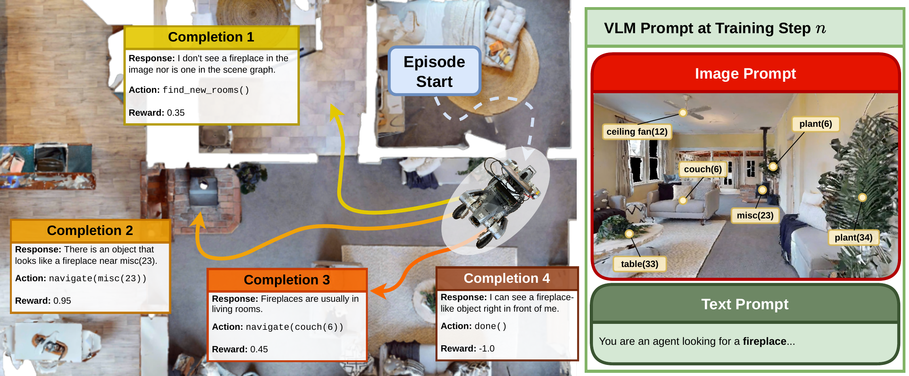
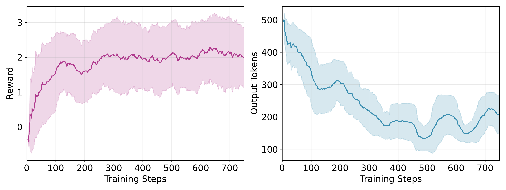
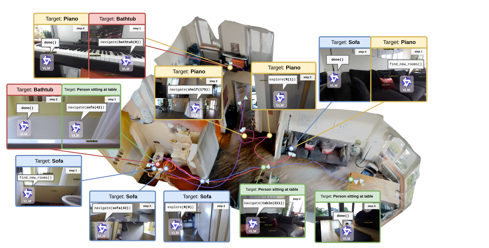
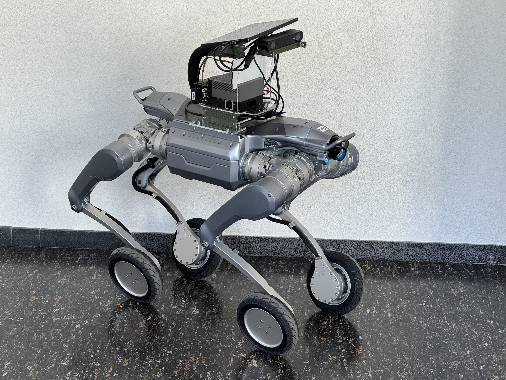
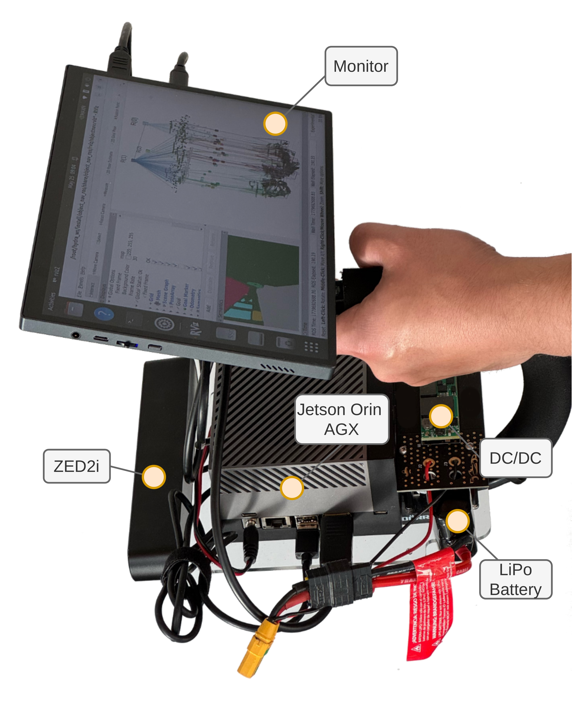
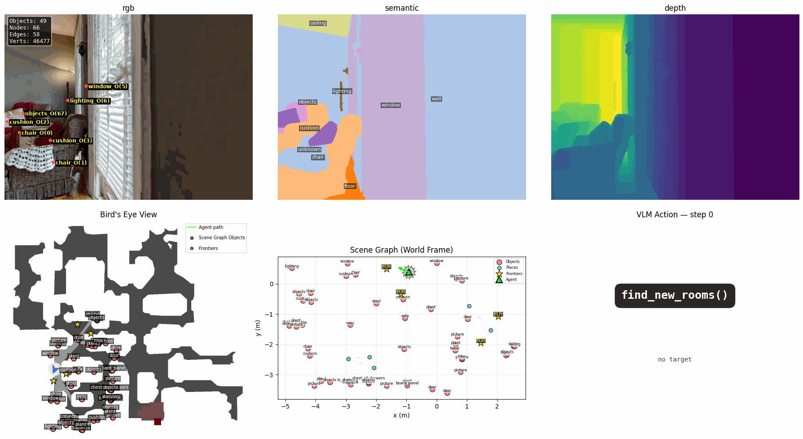
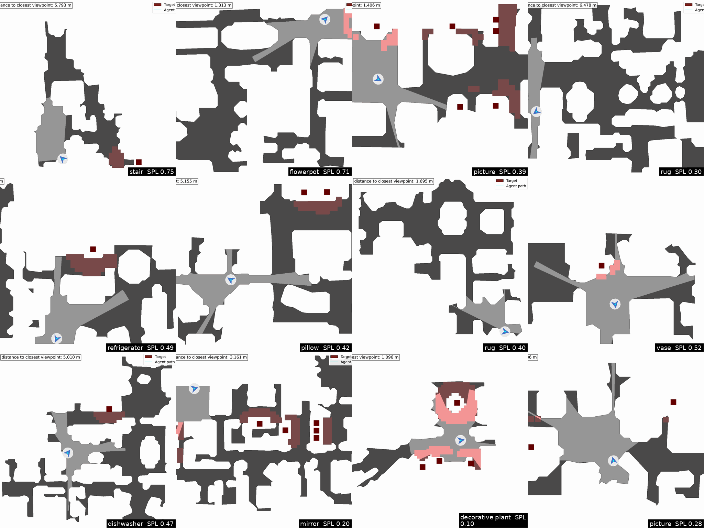

Vision Language Models (VLMs) have emerged in the robotic domain as a powerful tool that enables environmental perception with language context, serving as a catalyst for open-vocabulary tasks like ObjectNav. Yet, their computational footprint typically confines them to cloud execution, hindering low-latency inference with local deployment on resource-constrained robots. To address this challenge, we present a distillation strategy that transfers complex spatial-semantic reasoning from large frontier models into a lightweight, 4B-parameter local VLM for edge execution on embedded GPU devices (e.g., Jetson Orin). We first establish a State of the Art (SotA), Scene Graph (SG)-based pipeline using Claude Sonnet 4.6, achieving a 39.7% Success Rate (SR) on the HM3D OVON benchmark. We then demonstrate that fine-tuning Qwen3.5-4B on just 500 frontier reasoning traces effectively enables navigation capabilities, yielding a SR of 34.5%, narrowing the gap to the performance of large cloud models. Finally, we introduce E-RLVR with Token Generation (TG) regularization to compress output sequence lengths for physical deployment while grounding the agent in its task. This downstream optimization reduces TG overhead by 72.1% and latency by 71.8%. Combined with quantization, this joint strategy yields a cumulative 82.8% reduction in overall inference latency without significantly sacrificing performance, presenting a viable paradigm for local, low-latency VLM execution on mobile robots.
Overview of the system architecture. A 3D SG is built in real time, providing information about rooms, objects, and unknown frontiers. SG objects which are within the agent’s PoV are projected into the prompt image, while the overall state of the SG is described in the text prompt. For space efficiency, we only plot a simplified version of the text prompt. In this example, the VLM chooses navigate(stove(23)) as the next action. This invokes the low-level planner to navigate the agent to the 3D position of stove(23).

A zero-shot 4B model manages only 21% SR, getting stuck in execution loops. We record raw reasoning traces from Gemini 3.1 Pro, GPT-5.4, and Claude Sonnet 4.6 as they solve ObjectNav in simulation, keeping only successful trajectories. Fine-tuning Qwen3.5-4B on just ~500 of these image–SG–output samples per teacher, orders of magnitude less than typical SFT corpora, lifts SR to 47% with the Claude-distilled dataset, closing most of the gap to cloud models.
SFT alone does not optimize deployment efficiency: distilled models remain verbose, and Token Generation (TG) dominates on-device latency. We move from "textbook" learning to "learning-by-doing" with a GRPO-based closed-loop training environment in Habitat. The VLM samples multiple completions per decision, each rolled out in an isolated simulation branch, and is rewarded for success, navigation progress, exploration, and brevity, via an output-length regularization term.

Combining SFT pretraining with downstream E-RLVR yields the most deployment-viable model: SR ticks up to 49%, redundant object revisits halve, and output length drops by 72.1% a 71.8% cut in per-episode latency. Paired with 4-bit quantization on a Jetson Orin AGX, the full pipeline reduces end-to-end inference latency by 82.8% without significantly sacrificing navigation performance.

We deploy LocalNav on a hand-held device and complete four sequential ObjectNav tasks in a real apartment "sofa," "piano," "bathtub," and "person sitting at a table" in a single continuous run. The agent reuses its accumulating Scene Graph across targets: the "bathtub" query is answered immediately since it was already observed near the start, while the final query demonstrates open-vocabulary grounding by visually confirming a person is seated at a table before stopping.





@article{baumann2026localnav,
author = {Baumann, Nicolas and Boyle, Liam and Deng, Pu and Ghignone, Edoardo and Sun, Boyang and Pollefeys, Marc and Benini, Luca and Magno, Michele},
title = {LocalNav: Distilling Frontier VLMs and Embodied RL for On-Device Object Goal Navigation},
journal = {arXiv preprint arXiv:2606.27871},
year = {2026},
}